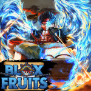
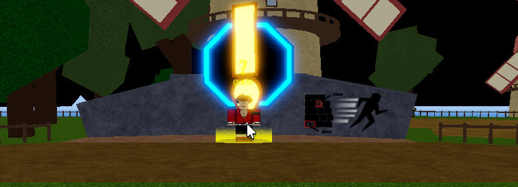
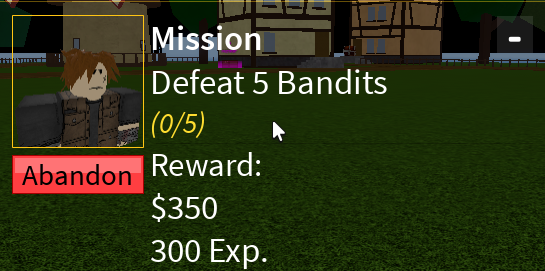
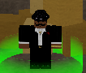
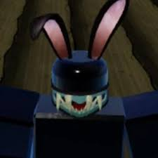
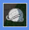
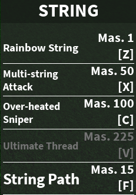

Guia Basica De BloxFruit | Roblox
Controles.- Q : Dash | Spacio Doble : Doble salto | CTRL : Correr |-.

1.- Debes tomar una Mision que te ayudara a Subir de nivel | Debes de subir asta nivel 15

Tienes que derrotar a los que te pide la mision especificamente | la primera mision es Derrotar a 5 Bandidos

(Cada que completes Una mision te Subira un nivel y Dinero
)
2.- Con el dinero puedes comprar una fruta random en la Jungla
(Para ir a mas islas tienes que comrar un barco) (Si comes una fruta te otorgara poderes) (cada fruta tiene un poder distinto) (si comes una fruta no podras nadar o moriras)

3.- Existen distintas razas estas son , Human , sky , Mink y shark man
cada raza te da un poder distinto (Las razas se obtienen iniciando o puedes comprar una raza distinta)

4.- Puedes Comprar distintas cosas con el dinero si es mas cara puede ser mejor aunque algunas son gratis por derrotar un jefe .

